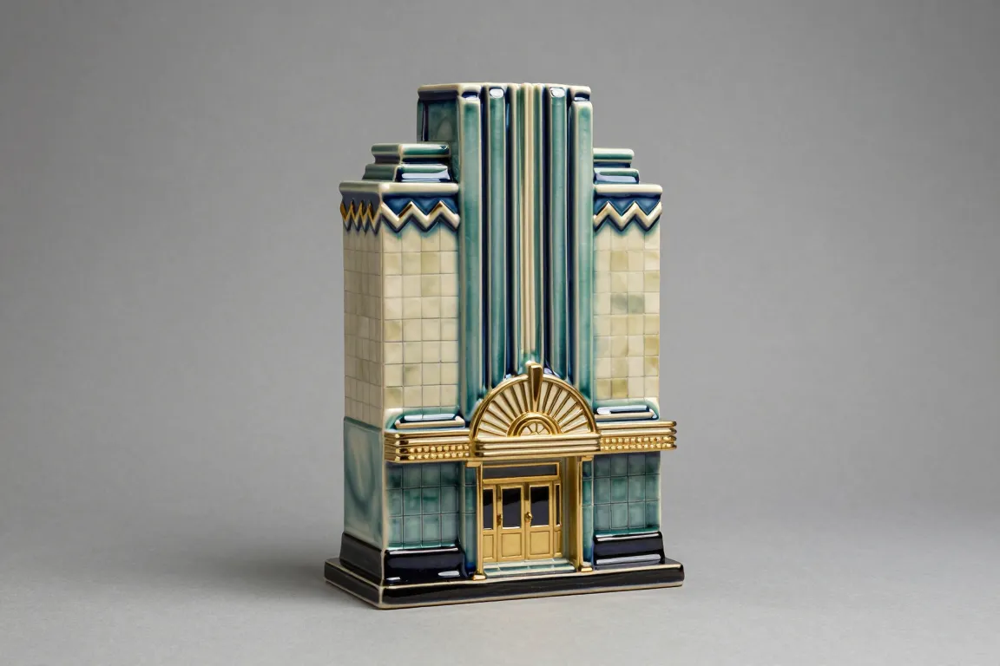

Glazed terracotta slabs in bright colours and gold that clad cinemas, shops and towers of the 1920s and 1930s. The ornament is flat and geometric: zigzags, sunbursts and stepped lines.

Core thesis
A glazed, washable slab turns a commercial building into a bright sign: colour and geometry attract the eye from the street.
Design principles
Clad the whole front with glazed slabs in one or two strong colours, with a gold or black band.
Mould the ornament in low relief: zigzags, sunbursts, chevrons, fountains and stepped forms.
Keep the slab flat, with a tight joint of 3 to 5 mm and a straight line of the grid.
Use a high-gloss or satin glaze that washes clean in the rain and in the street dirt.
Make the slab hollow and 30 to 60 mm thick, with a tie for the steel frame.
Light the facade at night; the glaze must reflect the light.
Place the tallest ornament over the entrance and at the top of the building.